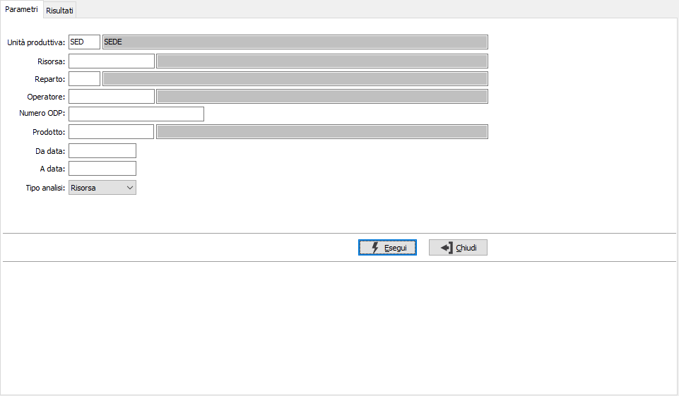
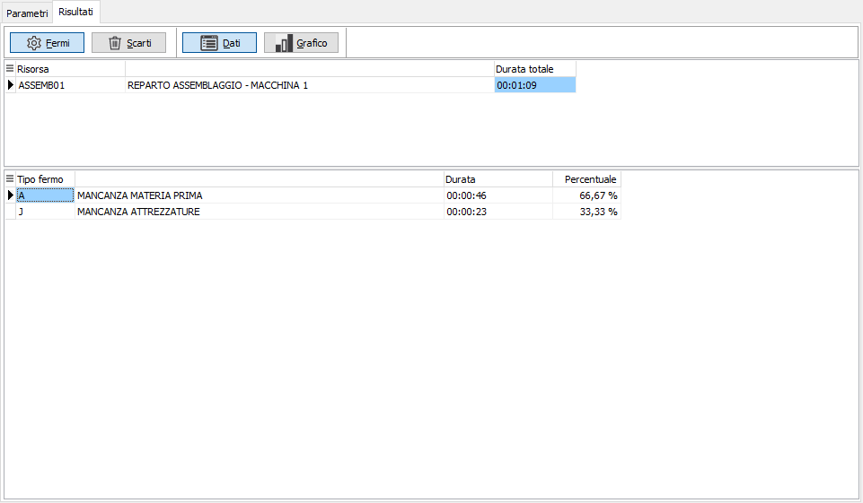
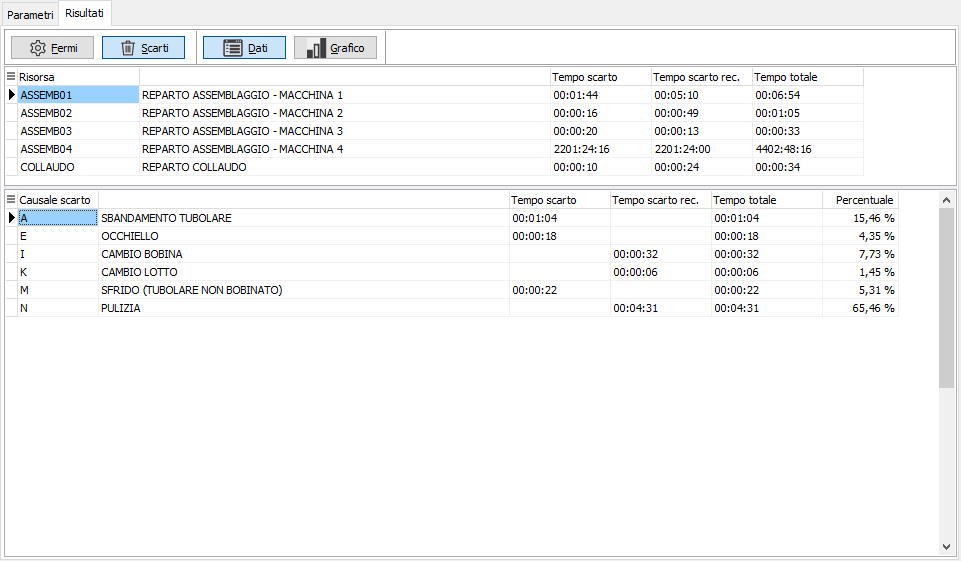
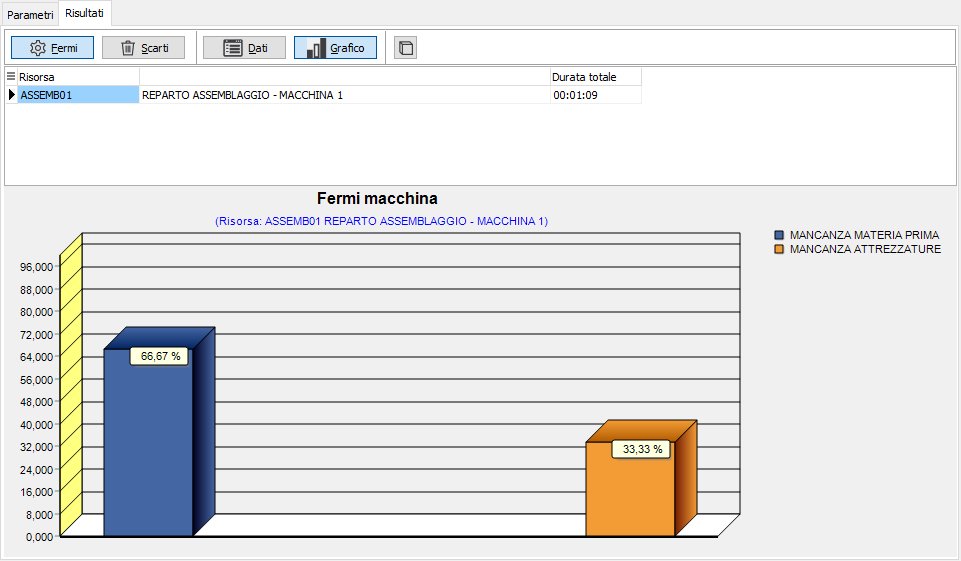
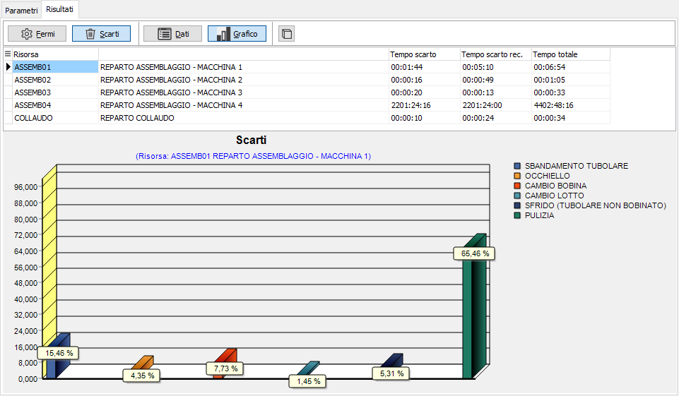

Analisi fermi macchina/scarti
La funzione consente di verificare in dettaglio le movimentazioni di fermo macchina e di scarto registrate tramite OS1BMJob; vengono considerati solo gli eventi definiti come elaborati, cioè su cui è stato calcolato il tempo risorsa.
Nella pagina dei parametri sono presenti i criteri di selezione per risorsa, reparto, operatore, numero ODP, prodotto e periodo di date relative agli ODP; è possibile ottenere le informazioni per una specifica risorsa, reparto, operatore, prodotto oppure singolo ODP. I dati vengono dettagliati per causa di fermo o causa di scarto ed è possibile visualizzare i risultati anche in forma grafica.
Premendo il pulsante Esegui si avvia l'elaborazione che porterà alla pagina dei risultati.

La pagina dei Risultati presenta una barra di pulsanti che consente di alternare la visualizzazione tra fermi e scarti e per ognuno tra dati e forma grafica; una griglia superiore che riporta, in base al tipo di analisi risorsa, reparto, operatore, prodotto oppure ODP ed il tempo totale. Tramite il bottone Stampa o Anteprima della toolbar è possibile effettuare la stampa dei dati mostrati.
Per i fermi macchina la griglia sottostante riporta il dettaglio delle tipologie di fermo con relativa durata e percentuale.

Per gli scarti la griglia sottostante riporta il dettaglio delle causali di scarto con relativa durata divisa tra scarto recuperabile e non recuperabile, tempo totale e percentuale.

Tramite il pulsante Grafico è possibile visualizzare il grafico relativo ai dati; se si utilizza il bottone Stampa o Anteprima della toolbar è possibile stampare il grafico visualizzato.
Il pulsante presente sulla maschera dei grafici, consente di alternare la visualizzazione del grafico in tre o due dimensioni.

